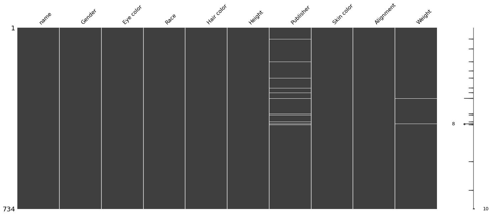
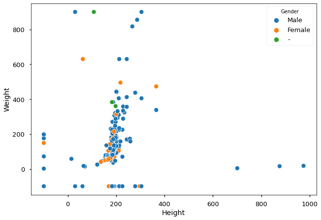

Project - Data Cleaning#
Introduction#
In this lab, we’ll make use of everything we’ve learned about pandas, data cleaning, and exploratory data analysis. In order to complete this lab, you’ll have to import, clean, combine, reshape, and visualize data to answer questions provided, as well as your own questions!
Objectives#
You will be able to:
Use different types of joins to merge DataFrames
Identify missing values in a dataframe using built-in methods
Evaluate and execute the best strategy for dealing with missing, duplicate, and erroneous values for a given dataset
Inspect data for duplicates or extraneous values and remove them
The dataset#
In this lab, we’ll work with the comprehensive Super Heroes Dataset, which can be found on Kaggle!
Getting Started#
In the cell below:
Import and alias pandas as
pdImport and alias numpy as
npImport and alias seaborn as
snsImport and alias matplotlib.pyplot as
pltSet matplotlib visualizations to display inline in the notebook
import pandas as pd
import numpy as np
import seaborn as sns
import matplotlib.pyplot as plt
%matplotlib inline
For this lab, our dataset is split among two different sources – 'heroes_information.csv' and 'super_hero_powers.csv'.
Use pandas to read in each file and store them in DataFrames in the appropriate variables below. Then, display the .head() of each to ensure that everything loaded correctly.
heroes_df = pd.read_csv('heroes_information.csv')
powers_df = pd.read_csv('super_hero_powers.csv')
display(heroes_df.head(), powers_df.head())
| Unnamed: 0 | name | Gender | Eye color | Race | Hair color | Height | Publisher | Skin color | Alignment | Weight | |
|---|---|---|---|---|---|---|---|---|---|---|---|
| 0 | 0 | A-Bomb | Male | yellow | Human | No Hair | 203.0 | Marvel Comics | - | good | 441.0 |
| 1 | 1 | Abe Sapien | Male | blue | Icthyo Sapien | No Hair | 191.0 | Dark Horse Comics | blue | good | 65.0 |
| 2 | 2 | Abin Sur | Male | blue | Ungaran | No Hair | 185.0 | DC Comics | red | good | 90.0 |
| 3 | 3 | Abomination | Male | green | Human / Radiation | No Hair | 203.0 | Marvel Comics | - | bad | 441.0 |
| 4 | 4 | Abraxas | Male | blue | Cosmic Entity | Black | -99.0 | Marvel Comics | - | bad | -99.0 |
| hero_names | Agility | Accelerated Healing | Lantern Power Ring | Dimensional Awareness | Cold Resistance | Durability | Stealth | Energy Absorption | Flight | ... | Web Creation | Reality Warping | Odin Force | Symbiote Costume | Speed Force | Phoenix Force | Molecular Dissipation | Vision - Cryo | Omnipresent | Omniscient | |
|---|---|---|---|---|---|---|---|---|---|---|---|---|---|---|---|---|---|---|---|---|---|
| 0 | 3-D Man | True | False | False | False | False | False | False | False | False | ... | False | False | False | False | False | False | False | False | False | False |
| 1 | A-Bomb | False | True | False | False | False | True | False | False | False | ... | False | False | False | False | False | False | False | False | False | False |
| 2 | Abe Sapien | True | True | False | False | True | True | False | False | False | ... | False | False | False | False | False | False | False | False | False | False |
| 3 | Abin Sur | False | False | True | False | False | False | False | False | False | ... | False | False | False | False | False | False | False | False | False | False |
| 4 | Abomination | False | True | False | False | False | False | False | False | False | ... | False | False | False | False | False | False | False | False | False | False |
5 rows × 168 columns
It looks as if the heroes information dataset contained an index column. We did not specify that this dataset contained an index column, because we hadn’t seen it yet. Pandas does not know how to tell apart an index column from any other data, so it stored it with the column name Unnamed: 0.
Our DataFrame provided row indices by default, so this column is not needed. Drop it from the DataFrame in place in the cell below, and then display the head of heroes_df to ensure that it worked properly.
# heroes_df.drop(columns=['Unnamed: 0'],inplace=True)
example = heroes_df.drop('Unnamed: 0',axis=1)
# heroes_df
heroes_df
| Unnamed: 0 | name | Gender | Eye color | Race | Hair color | Height | Publisher | Skin color | Alignment | Weight | |
|---|---|---|---|---|---|---|---|---|---|---|---|
| 0 | 0 | A-Bomb | Male | yellow | Human | No Hair | 203.0 | Marvel Comics | - | good | 441.0 |
| 1 | 1 | Abe Sapien | Male | blue | Icthyo Sapien | No Hair | 191.0 | Dark Horse Comics | blue | good | 65.0 |
| 2 | 2 | Abin Sur | Male | blue | Ungaran | No Hair | 185.0 | DC Comics | red | good | 90.0 |
| 3 | 3 | Abomination | Male | green | Human / Radiation | No Hair | 203.0 | Marvel Comics | - | bad | 441.0 |
| 4 | 4 | Abraxas | Male | blue | Cosmic Entity | Black | -99.0 | Marvel Comics | - | bad | -99.0 |
| ... | ... | ... | ... | ... | ... | ... | ... | ... | ... | ... | ... |
| 729 | 729 | Yellowjacket II | Female | blue | Human | Strawberry Blond | 165.0 | Marvel Comics | - | good | 52.0 |
| 730 | 730 | Ymir | Male | white | Frost Giant | No Hair | 304.8 | Marvel Comics | white | good | -99.0 |
| 731 | 731 | Yoda | Male | brown | Yoda's species | White | 66.0 | George Lucas | green | good | 17.0 |
| 732 | 732 | Zatanna | Female | blue | Human | Black | 170.0 | DC Comics | - | good | 57.0 |
| 733 | 733 | Zoom | Male | red | - | Brown | 185.0 | DC Comics | - | bad | 81.0 |
734 rows × 11 columns
heroes_df = pd.read_csv('heroes_information.csv', index_col=0)
heroes_df
| name | Gender | Eye color | Race | Hair color | Height | Publisher | Skin color | Alignment | Weight | |
|---|---|---|---|---|---|---|---|---|---|---|
| 0 | A-Bomb | Male | yellow | Human | No Hair | 203.0 | Marvel Comics | - | good | 441.0 |
| 1 | Abe Sapien | Male | blue | Icthyo Sapien | No Hair | 191.0 | Dark Horse Comics | blue | good | 65.0 |
| 2 | Abin Sur | Male | blue | Ungaran | No Hair | 185.0 | DC Comics | red | good | 90.0 |
| 3 | Abomination | Male | green | Human / Radiation | No Hair | 203.0 | Marvel Comics | - | bad | 441.0 |
| 4 | Abraxas | Male | blue | Cosmic Entity | Black | -99.0 | Marvel Comics | - | bad | -99.0 |
| ... | ... | ... | ... | ... | ... | ... | ... | ... | ... | ... |
| 729 | Yellowjacket II | Female | blue | Human | Strawberry Blond | 165.0 | Marvel Comics | - | good | 52.0 |
| 730 | Ymir | Male | white | Frost Giant | No Hair | 304.8 | Marvel Comics | white | good | -99.0 |
| 731 | Yoda | Male | brown | Yoda's species | White | 66.0 | George Lucas | green | good | 17.0 |
| 732 | Zatanna | Female | blue | Human | Black | 170.0 | DC Comics | - | good | 57.0 |
| 733 | Zoom | Male | red | - | Brown | 185.0 | DC Comics | - | bad | 81.0 |
734 rows × 10 columns
Familiarize yourself with the dataset#
The first step in our Exploratory Data Analysis will be to get familiar with the data. This step includes:
Understanding the dimensionality of your dataset
Investigating what type of data it contains, and the data types used to store it
Discovering how missing values are encoded, and how many there are
Getting a feel for what information it does and doesn’t contain
In the cell below, get the descriptive statistics of each DataFrame.
heroes_df.info()
<class 'pandas.core.frame.DataFrame'>
Int64Index: 734 entries, 0 to 733
Data columns (total 10 columns):
# Column Non-Null Count Dtype
--- ------ -------------- -----
0 name 734 non-null object
1 Gender 734 non-null object
2 Eye color 734 non-null object
3 Race 734 non-null object
4 Hair color 734 non-null object
5 Height 734 non-null float64
6 Publisher 719 non-null object
7 Skin color 734 non-null object
8 Alignment 734 non-null object
9 Weight 732 non-null float64
dtypes: float64(2), object(8)
memory usage: 63.1+ KB
# np.nanmean()
heroes_df.describe().round(2)
| Height | Weight | |
|---|---|---|
| count | 734.00 | 732.00 |
| mean | 102.25 | 43.86 |
| std | 139.62 | 130.82 |
| min | -99.00 | -99.00 |
| 25% | -99.00 | -99.00 |
| 50% | 175.00 | 62.00 |
| 75% | 185.00 | 90.00 |
| max | 975.00 | 900.00 |
Dealing with missing values#
Starting in the cell below, detect and deal with any missing values in either DataFrame. Then, explain your methodology for detecting and dealing with outliers in the markdown section below. Be sure to explain your strategy for dealing with missing values in numeric columns, as well as your strategy for dealing with missing values in non-numeric columns.
Note that if you need to add more cells to write code in, you can do this by:
1. Highlighting a cell and then pressing ESC to enter command mode.
2. Press A to add a cell above the highlighted cell, or B to add a cell below the highlighted cell.
Describe your strategy below this line:
Visual Alternatives#
# !pip install missingno
import missingno
missingno.matrix(heroes_df)
<AxesSubplot:>

heroes_df#
res = heroes_df.isna().sum()
res[res>0]
Publisher 15
Weight 2
dtype: int64
# heroes_df.loc[heroes_df['Publisher'].isna(),'Publisher' ]
heroes_df[heroes_df.isna().any(axis=1)]
| name | Gender | Eye color | Race | Hair color | Height | Publisher | Skin color | Alignment | Weight | |
|---|---|---|---|---|---|---|---|---|---|---|
| 46 | Astro Boy | Male | brown | - | Black | -99.0 | NaN | - | good | -99.0 |
| 86 | Bionic Woman | Female | blue | Cyborg | Black | -99.0 | NaN | - | good | -99.0 |
| 138 | Brundlefly | Male | - | Mutant | - | 193.0 | NaN | - | - | -99.0 |
| 175 | Chuck Norris | Male | - | - | - | 178.0 | NaN | - | good | -99.0 |
| 204 | Darkside | - | - | - | - | -99.0 | NaN | - | bad | -99.0 |
| 244 | Ethan Hunt | Male | brown | Human | Brown | 168.0 | NaN | - | good | -99.0 |
| 263 | Flash Gordon | Male | - | - | - | -99.0 | NaN | - | good | -99.0 |
| 286 | Godzilla | - | - | Kaiju | - | 108.0 | NaN | grey | bad | NaN |
| 348 | Jack Bauer | Male | - | - | - | -99.0 | NaN | - | good | -99.0 |
| 354 | Jason Bourne | Male | - | Human | - | -99.0 | NaN | - | good | -99.0 |
| 381 | Katniss Everdeen | Female | - | Human | - | -99.0 | NaN | - | good | -99.0 |
| 389 | King Kong | Male | yellow | Animal | Black | 30.5 | NaN | - | good | NaN |
| 393 | Kool-Aid Man | Male | black | - | No Hair | -99.0 | NaN | red | good | -99.0 |
| 542 | Rambo | Male | brown | Human | Black | 178.0 | NaN | - | good | 83.0 |
| 658 | The Cape | Male | - | - | - | -99.0 | NaN | - | good | -99.0 |
heroes_df['Publisher'] = heroes_df['Publisher'].fillna('Missing')
## Missing
heroes_df[heroes_df.isna().any(axis=1)]
| name | Gender | Eye color | Race | Hair color | Height | Publisher | Skin color | Alignment | Weight | |
|---|---|---|---|---|---|---|---|---|---|---|
| 286 | Godzilla | - | - | Kaiju | - | 108.0 | Missing | grey | bad | NaN |
| 389 | King Kong | Male | yellow | Animal | Black | 30.5 | Missing | - | good | NaN |
heroes_df['Weight'].max()
900.0
heroes_df['Weight'].fillna(heroes_df['Weight'].max(),inplace=True)
heroes_df[heroes_df.isna().any(axis=1)]
| name | Gender | Eye color | Race | Hair color | Height | Publisher | Skin color | Alignment | Weight |
|---|
heroes_df.isna().sum()
name 0
Gender 0
Eye color 0
Race 0
Hair color 0
Height 0
Publisher 0
Skin color 0
Alignment 0
Weight 0
dtype: int64
powers_df#
res = powers_df.isna().sum()
res[ res>0]
Series([], dtype: int64)
Joining, Grouping, and Aggregating#
In the cell below, join the two DataFrames. Think about which sort of join you should use, as well as which columns you should join on. Rename columns and manipulate as needed.
HINT: Consider the possibility that the columns you choose to join on contain duplicate entries. If that is the case, devise a strategy to deal with the duplicates.
HINT: If the join throws an error message, consider setting the column you want to join on as the index for each DataFrame.
heroes_df[heroes_df.duplicated(keep=False)]
| name | Gender | Eye color | Race | Hair color | Height | Publisher | Skin color | Alignment | Weight | |
|---|---|---|---|---|---|---|---|---|---|---|
| 290 | Goliath | Male | - | Human | - | -99.0 | Marvel Comics | - | good | -99.0 |
| 291 | Goliath | Male | - | Human | - | -99.0 | Marvel Comics | - | good | -99.0 |
heroes_df = heroes_df[~heroes_df.duplicated()]
heroes_df[heroes_df.duplicated()]
| name | Gender | Eye color | Race | Hair color | Height | Publisher | Skin color | Alignment | Weight |
|---|
heroes_df.drop_duplicates(inplace=True)
display(heroes_df.head(2),powers_df.head(2))
| name | Gender | Eye color | Race | Hair color | Height | Publisher | Skin color | Alignment | Weight | |
|---|---|---|---|---|---|---|---|---|---|---|
| 0 | A-Bomb | Male | yellow | Human | No Hair | 203.0 | Marvel Comics | - | good | 441.0 |
| 1 | Abe Sapien | Male | blue | Icthyo Sapien | No Hair | 191.0 | Dark Horse Comics | blue | good | 65.0 |
| hero_names | Agility | Accelerated Healing | Lantern Power Ring | Dimensional Awareness | Cold Resistance | Durability | Stealth | Energy Absorption | Flight | ... | Web Creation | Reality Warping | Odin Force | Symbiote Costume | Speed Force | Phoenix Force | Molecular Dissipation | Vision - Cryo | Omnipresent | Omniscient | |
|---|---|---|---|---|---|---|---|---|---|---|---|---|---|---|---|---|---|---|---|---|---|
| 0 | 3-D Man | True | False | False | False | False | False | False | False | False | ... | False | False | False | False | False | False | False | False | False | False |
| 1 | A-Bomb | False | True | False | False | False | True | False | False | False | ... | False | False | False | False | False | False | False | False | False | False |
2 rows × 168 columns
heroes_df.join(powers_df,)[['name','hero_names']]
# heroes_df
df = pd.merge(heroes_df,powers_df,left_on='name',right_on='hero_names',how='inner')
df
| name | Gender | Eye color | Race | Hair color | Height | Publisher | Skin color | Alignment | Weight | ... | Web Creation | Reality Warping | Odin Force | Symbiote Costume | Speed Force | Phoenix Force | Molecular Dissipation | Vision - Cryo | Omnipresent | Omniscient | |
|---|---|---|---|---|---|---|---|---|---|---|---|---|---|---|---|---|---|---|---|---|---|
| 0 | A-Bomb | Male | yellow | Human | No Hair | 203.0 | Marvel Comics | - | good | 441.0 | ... | False | False | False | False | False | False | False | False | False | False |
| 1 | Abe Sapien | Male | blue | Icthyo Sapien | No Hair | 191.0 | Dark Horse Comics | blue | good | 65.0 | ... | False | False | False | False | False | False | False | False | False | False |
| 2 | Abin Sur | Male | blue | Ungaran | No Hair | 185.0 | DC Comics | red | good | 90.0 | ... | False | False | False | False | False | False | False | False | False | False |
| 3 | Abomination | Male | green | Human / Radiation | No Hair | 203.0 | Marvel Comics | - | bad | 441.0 | ... | False | False | False | False | False | False | False | False | False | False |
| 4 | Abraxas | Male | blue | Cosmic Entity | Black | -99.0 | Marvel Comics | - | bad | -99.0 | ... | False | False | False | False | False | False | False | False | False | False |
| ... | ... | ... | ... | ... | ... | ... | ... | ... | ... | ... | ... | ... | ... | ... | ... | ... | ... | ... | ... | ... | ... |
| 655 | Yellowjacket II | Female | blue | Human | Strawberry Blond | 165.0 | Marvel Comics | - | good | 52.0 | ... | False | False | False | False | False | False | False | False | False | False |
| 656 | Ymir | Male | white | Frost Giant | No Hair | 304.8 | Marvel Comics | white | good | -99.0 | ... | False | False | False | False | False | False | False | False | False | False |
| 657 | Yoda | Male | brown | Yoda's species | White | 66.0 | George Lucas | green | good | 17.0 | ... | False | False | False | False | False | False | False | False | False | False |
| 658 | Zatanna | Female | blue | Human | Black | 170.0 | DC Comics | - | good | 57.0 | ... | False | False | False | False | False | False | False | False | False | False |
| 659 | Zoom | Male | red | - | Brown | 185.0 | DC Comics | - | bad | 81.0 | ... | False | False | False | False | False | False | False | False | False | False |
660 rows × 178 columns
# pd.merge(heroes_df,powers_df,left_on='name',right_on='hero_names',how='outer')
In the cell below, subset male and female heroes into different dataframes. Create a scatterplot of the height and weight of each hero, with weight as the y-axis. Plot both the male and female heroes subset into each dataframe, and make the color for each point in the scatterplot correspond to the gender of the superhero.
plt.style.use('seaborn-talk')
sns.scatterplot(data=df, x='Height', y='Weight',hue='Gender')
<AxesSubplot:xlabel='Height', ylabel='Weight'>

Addressing -99s#
df[(df['Height']<0) | (df['Weight']<0)]
| name | Gender | Eye color | Race | Hair color | Height | Publisher | Skin color | Alignment | Weight | ... | Web Creation | Reality Warping | Odin Force | Symbiote Costume | Speed Force | Phoenix Force | Molecular Dissipation | Vision - Cryo | Omnipresent | Omniscient | |
|---|---|---|---|---|---|---|---|---|---|---|---|---|---|---|---|---|---|---|---|---|---|
| 4 | Abraxas | Male | blue | Cosmic Entity | Black | -99.0 | Marvel Comics | - | bad | -99.0 | ... | False | False | False | False | False | False | False | False | False | False |
| 6 | Adam Monroe | Male | blue | - | Blond | -99.0 | NBC - Heroes | - | good | -99.0 | ... | False | False | False | False | False | False | False | False | False | False |
| 13 | Alex Mercer | Male | - | Human | - | -99.0 | Wildstorm | - | bad | -99.0 | ... | False | False | False | False | False | False | False | False | False | False |
| 14 | Alex Woolsly | Male | - | - | - | -99.0 | NBC - Heroes | - | good | -99.0 | ... | False | False | False | False | False | False | False | False | False | False |
| 16 | Allan Quatermain | Male | - | - | - | -99.0 | Wildstorm | - | good | -99.0 | ... | False | False | False | False | False | False | False | False | False | False |
| ... | ... | ... | ... | ... | ... | ... | ... | ... | ... | ... | ... | ... | ... | ... | ... | ... | ... | ... | ... | ... | ... |
| 642 | Watcher | Male | - | - | - | -99.0 | Marvel Comics | - | good | -99.0 | ... | False | False | False | False | False | False | False | False | False | False |
| 643 | Weapon XI | Male | - | - | - | -99.0 | Marvel Comics | - | bad | -99.0 | ... | False | False | False | False | False | False | False | False | False | False |
| 644 | White Canary | Female | brown | Human | Black | -99.0 | DC Comics | - | bad | -99.0 | ... | False | False | False | False | False | False | False | False | False | False |
| 645 | Wildfire | Male | - | - | - | -99.0 | DC Comics | - | good | -99.0 | ... | False | False | False | False | False | False | False | False | False | False |
| 656 | Ymir | Male | white | Frost Giant | No Hair | 304.8 | Marvel Comics | white | good | -99.0 | ... | False | False | False | False | False | False | False | False | False | False |
195 rows × 178 columns
df['Height']=df['Height'].map(lambda x: np.nan if x<0 else x)
df['Height'].isna().sum()
170
Some Initial Investigation#
Next, slice the DataFrame as needed and visualize the distribution of heights and weights by gender. You should have 4 total plots.
In the cell below:
Slice the DataFrame into separate DataFrames by gender
Complete the
show_distplot()function. This helper function should take in a DataFrame, a string containing the gender we want to visualize, and the column name we want to visualize by gender. The function should display a distplot visualization from seaborn of the column/gender combination.
Hint: Don’t forget to check the seaborn documentation for distplot if you have questions about how to use it correctly!
male_heroes_df = None
female_heroes_df = None
def show_distplot(dataframe, gender, column_name):
pass
# Male Height
# Male Weight
# Female Height
# Female Weight
Discuss your findings from the plots above, with respect to the distribution of height and weight by gender. Your explanation should include a discussion of any relevant summary statistics, including mean, median, mode, and the overall shape of each distribution.
Write your answer below this line:
Sample Question: Most Common Powers#
The rest of this notebook will be left to you to investigate the dataset by formulating your own questions, and then seeking answers using pandas and numpy. Every answer should include some sort of visualization, when appropriate. Before moving on to formulating your own questions, use the dataset to answer the following questions about superhero powers:
What are the 5 most common powers overall?
What are the 5 most common powers in the Marvel Universe?
What are the 5 most common powers in the DC Universe?
Analyze the results you found above to answer the following question:
How do the top 5 powers in the Marvel and DC universes compare? Are they similar, or are there significant differences? How do they compare to the overall trends in the entire Superheroes dataset?
Write your answer below this line:
Your Own Investigation#
For the remainder of this lab, you’ll be focusing on coming up with and answering your own question, just like we did above. Your question should not be overly simple, and should require both descriptive statistics and data visualization to answer. In case you’re unsure of what questions to ask, some sample questions have been provided below.
Pick one of the following questions to investigate and answer, or come up with one of your own!
Which powers have the highest chance of co-occurring in a hero (e.g. super strength and flight), and does this differ by gender?
Is there a relationship between a hero’s height and weight and their powerset?
What is the distribution of skin colors amongst alien heroes?
Explain your question below this line:
Some sample cells have been provided to give you room to work. If you need to create more cells, you can do this easily by:
Highlighting a cell and then pressing
escto enter command mode.Pressing
bto add a cell below the currently highlighted cell, orato add one above it.
Be sure to include thoughtful, well-labeled visualizations to back up your analysis!
Summary#
In this lab, we demonstrated our mastery of:
Using all of our Pandas knowledge to date to clean the dataset and deal with null values
Using Queries and aggregations to group the data into interesting subsets as needed
Using descriptive statistics and data visualization to find answers to questions we may have about the data